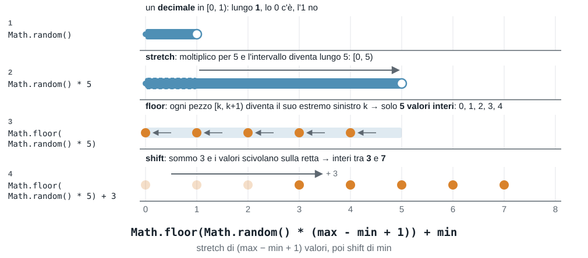

Esercitazione 4 - 19/10
Argomenti:
- "cosa stampa?", tracciamento delle variabili e ricerca degli errori
- funzioni: senza parametri, con parametri, con
return
Indice degli esercizi
| Esercizio | Argomento |
|---|---|
| Esercizio 1 | Numeri casuali: cosa restituisce |
| Esercizio 2 | Numeri casuali: costruire l'intervallo |
| Esercizio 3 | Numeri casuali: il gioco del dado |
| Esercizio 4 | Numeri casuali e massimo |
| Esercizio 5 | Do-while: cosa succede durante l'esecuzione |
| Esercizio 6 | Do-while: scrivere la condizione |
| Esercizio 7 | Condizioni e variabili: cosa stampa |
| Esercizio 8 | Funzioni senza return |
| Esercizio 9 | Funzioni: return |
| Esercizio 10 | Funzioni e variabili locali |
| Esercizio 11 | Funzioni e controllo dell'input: potenza |
| Esercizio 12 | Funzioni e accumulatori: somma dei pari |
| Esercizio 13 | Funzioni, numeri casuali e do-while |
| Esercizio 14 | Indovina il numero |
Come si lavora
- Brevi Recap pratici, alternati agli esercizi
- Svolgiamo alcuni esercizi insieme (io scrivo il codice live, voi fate lo stesso)
- Esercizi svolti da voi in autonomia
- Domande
Le regole sono le stesse delle volte scorse:
- provare prima di rinunciare
- commenti dove il codice non parla da solo
- eseguite sempre il programma con più valori, compresi i casi "strani" (0, numeri negativi, decimali).
Esercizio 1
Per ciascuna espressione dite: se i valori sono interi o decimali, qual è il minimo e il massimo possibile (e se il massimo può uscire davvero) e quanti valori diversi possono uscire, se sono in numero finito.
A. Math.random() * 10
B. Math.floor(Math.random() * 10)
C. Math.floor(Math.random() * 10) + 1
D. Math.floor(Math.random() * 6) + 1
E. Math.floor(Math.random() * 10) * 2
F. Math.floor(Math.random() * 3) - 1
G. Math.floor(Math.random() * 10 + 1)
H. Math.floor(Math.random() * 51) + 50
Poi rispondete:
- se volete un intero tra
50e100, perché si moltiplica per51e non per50?
Soluzione
| Tipo | Minimo | Massimo | Valori possibili | |
|---|---|---|---|---|
| A | decimale | 0 | vicino a 10, ma mai 10 | infiniti |
| B | intero | 0 | 9 | 10 |
| C | intero | 1 | 10 | 10 |
| D | intero | 1 | 6 | 6 |
| E | intero (solo pari) | 0 | 18 | 10: 0, 2, 4, ..., 18 |
| F | intero | -1 | 1 | 3: -1, 0, 1 |
| G | intero | 1 | 10 | 10 |
| H | intero | 50 | 100 | 51 |
- Dado: la D.
- Equivalenti: C e G. In G,
Math.random() * 10 + 1è un decimale in[1, 11), eMath.floorlo porta a un intero tra1e10: lo stesso risultato di C, dove si somma 1 dopo aver tolto i decimali. Attenzione invece a E: moltiplicare dopoMath.floorallarga i valori ma non li rende più numerosi, e restano solo i pari. - Perché 51: i valori tra 50 e 100 sono
100 - 50 + 1 = 51. Moltiplicando per50(e sommando50) si otterrebbero interi tra50e99, e il100non uscirebbe mai.
La regola, in generale: per un intero tra min e max (estremi inclusi) si usa
Math.floor(Math.random() * (max - min + 1)) + mindove max - min + 1 è quanti valori sono possibili, e min è il valore da cui si parte.
Da Math.random() a un intervallo
Un intero casuale in un intervallo si costruisce in due mosse: prima si allunga l'intervallo di Math.random() (che è lungo 1), poi lo si sposta sulla retta. Esempio: un intero tra 3 e 7.

Esercizio 2
Usate lo stesso schema della figura precedente negli intervalli seguenti. Completate (al posto di ______) i due numeri, in modo che l'espressione dia un intero nell'intervallo indicato (estremi inclusi):
Math.floor(Math.random() * ______) + ______A. tra 0 e 3 (il secondo numero sarà 0)
B. tra 1 e 20
C. tra 3 e 7
D. tra 10 e 20
E. tra -5 e 5
Soluzione
Il primo numero è quanti valori sono possibili (max - min + 1), il secondo è il minimo.
A. Math.floor(Math.random() * 4) + 0: i valori sono 0, 1, 2, 3, quindi 4; il minimo è 0 (e il + 0 si può omettere).
B. Math.floor(Math.random() * 20) + 1: 20 valori, minimo 1.
C. Math.floor(Math.random() * 5) + 3: i valori sono 3, 4, 5, 6, 7, cioè 5; minimo 3.
D. Math.floor(Math.random() * 11) + 10: 20 - 10 + 1 = 11 valori, minimo 10.
E. Math.floor(Math.random() * 11) - 5: 5 - (-5) + 1 = 11 valori, minimo -5 (si somma -5, cioè si sottrae 5).
Errore classico: nell'intervallo 10–20 moltiplicare per 10 (la differenza) invece che per 11: il 20 non uscirebbe mai.
Esercizio 3
Il gioco del dado. L'utente sceglie un numero tra 1 e 6, e il programma lancia un dado finché non esce proprio quel numero, contando quanti tentativi servono. A passi:
A. Simulare un lancio di dado: salvare il risultato in una variabile lancio e stampare È uscito: ....
B. Il numero da ottenere è fisso: il 6. Ripetere i lanci finché non esce un 6, stampando ogni lancio e, alla fine, quanti tentativi sono serviti. Completate (al posto di ______):
let tentativi = ______;
let lancio;
______ {
lancio = Math.floor(Math.random() * ______) + ______;
tentativi++;
console.log("Tentativo", tentativi + ":", lancio);
} ______ (______);
console.log("Ci sono voluti", tentativi, "tentativi");C. Ora il numero lo sceglie l'utente: chiedere un intero tra 1 e 6 (se non lo è, ripetere la domanda) e poi lanciare il dado finché non esce quel numero. Stampare i tentativi alla fine.
Esempio di esecuzione (i lanci cambiano a ogni esecuzione), con 4 come numero scelto:
Tentativo 1: 2
Tentativo 2: 6
Tentativo 3: 4
Ci sono voluti 3 tentativiSoluzione
// A.
let lancio = Math.floor(Math.random() * 6) + 1;
console.log("È uscito:", lancio);
// B.
let tentativi = 0;
let lancio;
do {
lancio = Math.floor(Math.random() * 6) + 1;
tentativi++;
console.log("Tentativo", tentativi + ":", lancio);
} while (lancio != 6);
console.log("Ci sono voluti", tentativi, "tentativi");
// C.
let scelto;
do {
scelto = Number(prompt("Scegli un numero intero tra 1 e 6:"));
} while (scelto < 1 || scelto > 6 || !Number.isInteger(scelto));
let tentativi = 0;
let lancio;
do {
lancio = Math.floor(Math.random() * 6) + 1;
tentativi++;
console.log("Tentativo", tentativi + ":", lancio);
} while (lancio != scelto);
console.log("Ci sono voluti", tentativi, "tentativi");(Le tre versioni sono alternative: provatele una alla volta, perché dichiarano le stesse variabili.)
Alternativa con while. Il while controlla la condizione prima di ogni giro, quindi la variabile deve avere, all'inizio, un valore che faccia entrare nel ciclo (qui 0, che non è né un 6 né un numero scelto valido):
// B. con while
let tentativi = 0;
let lancio = 0; // valore "finto": diverso da 6
while (lancio != 6) {
lancio = Math.floor(Math.random() * 6) + 1;
tentativi++;
console.log("Tentativo", tentativi + ":", lancio);
}
console.log("Ci sono voluti", tentativi, "tentativi");
// C. con while (stessa idea, anche per il controllo dell'input)
let scelto = 0; // non valido: si entra nel ciclo
while (scelto < 1 || scelto > 6 || !Number.isInteger(scelto)) {
scelto = Number(prompt("Scegli un numero intero tra 1 e 6:"));
}
let tentativi = 0;
let lancio = 0; // diverso da scelto, che è >= 1
while (lancio != scelto) {
lancio = Math.floor(Math.random() * 6) + 1;
tentativi++;
console.log("Tentativo", tentativi + ":", lancio);
}
console.log("Ci sono voluti", tentativi, "tentativi");Il risultato è lo stesso, ma il do ... while è più naturale: non serve inventare un valore iniziale "finto". Un for qui non è adatto: non si sa quanti giri serviranno.
Il numero casuale va generato dentro il ciclo: un nuovo lancio a ogni giro. Il ciclo si ripete finché il lancio è diverso dal numero scelto (la condizione descrive il caso in cui si deve continuare). Il do ... while è adatto perché il primo lancio va fatto sempre, e il contatore tentativi aumenta a ogni giro. Nella C ci sono due do ... while: il primo controlla l'input (intero tra 1 e 6), il secondo fa i lanci. In media servono 6 tentativi, ma può andare molto meglio o molto peggio: eseguite più volte.
Esercizio 4
Generare 10 numeri casuali interi tra 50 e 100 (estremi inclusi), stamparli e, alla fine, stampare il più grande. A passi:
A. Per trovare il più grande si usa un accumulatore, massimo. Compilate la tabella per i numeri 7, 3, 9, 4 che arrivano nell'ordine:
let massimo = 0;
// per ogni numero:
if (numero > massimo) {
massimo = numero;
}| Numero | numero > massimo | massimo dopo |
|---|---|---|
| 7 | ||
| 3 | ||
| 9 | ||
| 4 |
B. Scrivete il programma completo: 10 numeri casuali tra 50 e 100, stampati uno per riga, e alla fine il più grande.
Soluzione
A.
| Numero | numero > massimo | massimo dopo |
|---|---|---|
| 7 | 7 > 0: vero | 7 |
| 3 | 3 > 7: falso | 7 |
| 9 | 9 > 7: vero | 9 |
| 4 | 4 > 9: falso | 9 |
Il massimo si aggiorna solo quando arriva un numero più grande di quello salvato.
B.
let massimo = 0; // più piccolo di qualsiasi valore possibile
for (let i = 1; i <= 10; i++) {
let numero = Math.floor(Math.random() * 51) + 50;
console.log(numero);
if (numero > massimo) {
massimo = numero;
}
}
console.log("Il più grande è", massimo);I valori possibili sono 100 - 50 + 1 = 51: si moltiplica per 51 e si somma 50. Tutti i numeri sono almeno 50, quindi 0 va bene come punto di partenza. Il numero casuale va generato dentro il ciclo.
Alternative con while e do ... while. Il for contiene tre cose: inizializzazione, condizione e aggiornamento. Con while e do ... while il contatore i va dichiarato prima del ciclo e aumentato dentro il corpo:
// con while
let massimo = 0;
let i = 1;
while (i <= 10) {
let numero = Math.floor(Math.random() * 51) + 50;
console.log(numero);
if (numero > massimo) {
massimo = numero;
}
i++;
}
console.log("Il più grande è", massimo);
// con do ... while
let massimo = 0;
let i = 1;
do {
let numero = Math.floor(Math.random() * 51) + 50;
console.log(numero);
if (numero > massimo) {
massimo = numero;
}
i++;
} while (i <= 10);
console.log("Il più grande è", massimo);Dimenticare i++ è l'errore classico: il ciclo non finirebbe più. (Le tre versioni sono alternative: provatele una alla volta.) Qui il numero di giri è noto (10), quindi il for è la scelta più chiara.
Esercizio 5
Questo programma chiede un numero positivo finché l'utente non ne inserisce uno:
let x;
do {
x = Number(prompt("Numero positivo:"));
console.log("letto", x);
} while (x <= 0);
console.log("fine", x);A. L'utente inserisce, nell'ordine, la sequenza 0, -2, 5. Cosa succede durante l'esecuzione? Per ogni giro dite quale valore viene letto, se il ciclo continua o si ferma e perché, e cosa viene stampato.
B. Stessa domanda con la sequenza -7, 0, 1.5, 4. Tutti i numeri della sequenza vengono letti?
C. Con quale sequenza di input il ciclo fa un solo giro?
Soluzione
A. Sequenza 0, -2, 5:
- Giro 1: legge
0, stampaletto 0. La condizione0 <= 0è vera: il ciclo continua. - Giro 2: legge
-2, stampaletto -2.-2 <= 0è vera: continua. - Giro 3: legge
5, stampaletto 5.5 <= 0è falsa: il ciclo si ferma. - Dopo il ciclo stampa
fine 5.
B. Sequenza -7, 0, 1.5, 4:
- Giro 1: legge
-7, stampaletto -7.-7 <= 0è vera: continua. - Giro 2: legge
0, stampaletto 0.0 <= 0è vera: continua. - Giro 3: legge
1.5, stampaletto 1.5.1.5 <= 0è falsa: il ciclo si ferma. - Dopo il ciclo stampa
fine 1.5.
Il 4 non viene mai letto: il programma si ferma al primo valore valido. E 1.5 è accettato, perché si chiede solo un numero positivo, non intero.
C. Con qualsiasi sequenza che inizia con un numero positivo, ad esempio 8: il corpo si esegue sempre una volta, poi la condizione 8 <= 0 è falsa e il ciclo termina. Stampa letto 8 e fine 8.
Il ciclo continua finché la condizione è vera, e la condizione descrive il caso sbagliato.
Esercizio 6
Per ciascuna richiesta, scrivete la condizione del while: deve essere vera quando il valore n è sbagliato, e quindi si richiede l'input.
A. Un numero qualsiasi (anche decimale) maggiore di 0. Completate: while (______)
B. Un numero (anche decimale) tra 0 e 1, estremi inclusi. Completate: while (______ || ______)
C. Un numero intero, qualsiasi. Completate: while (______)
D. Un numero intero tra 1 e 12 (estremi inclusi).
E. Un numero intero tra 1 e 12 (estremi esclusi).
Poi per ciascuna controllate la condizione con questi valori: 0, 1, 2.5, 12, -3 (quali vengono accettati?).
Per casa. Stessa richiesta (scrivete la condizione del while) per queste altre situazioni. Controllate ogni condizione con qualche valore valido e qualche valore sbagliato, specialmente agli estremi.
F. Un numero pari (quindi intero). Suggerimento: % dà il resto della divisione. Provate con 0, 12, 7, 2.5, -10.
G. Un numero intero positivo di 3 cifre (da 100 a 999). Provate con 99, 100, 999, 1000, 150.5.
H. Un numero negativo oppure maggiore di 10. Attenzione: qui i valori accettati sono due intervalli separati. Provate con -5, 0, 10, 10.5, 12.
I. Un numero intero tra 1 e 100 (estremi inclusi) che non sia un multiplo di 10. Provate con 0, 7, 10, 55, 100.
J. Un numero (anche decimale) compreso tra -10 e 10 (estremi inclusi) ma non compreso tra -1 e 1 (estremi esclusi, cioè -1 e 1 sono accettati). Provate con -10, -1, -0.5, 0, 1, 5, 10, 10.5.
Soluzione
A. n <= 0: lo 0 non è maggiore di 0, quindi va scartato. Accetta 1, 2.5, 12.
B. n < 0 || n > 1. Accetta 0 e 1 (estremi inclusi); scarta 2.5, 12, -3.
C. !Number.isInteger(n). Accetta 0, 1, 12, -3; scarta 2.5.
D. n < 1 || n > 12 || !Number.isInteger(n). Accetta 1 e 12; scarta 0, 2.5, -3.
E. n <= 1 || n >= 12 || !Number.isInteger(n). Accetta solo i valori interi da 2 a 11: scarta sia 1 sia 12.
F. !Number.isInteger(n) || n % 2 != 0. Accetta 0, 12, -10; scarta 7 (dispari) e 2.5 (non intero). In realtà basta n % 2 != 0: per un decimale come 2.5 il resto è 0.5, quindi già diverso da 0.
G. n < 100 || n > 999 || !Number.isInteger(n). Accetta 100 e 999; scarta 99, 1000, 150.5.
H. n >= 0 && n <= 10. Il valore è sbagliato quando sta nell'intervallo tra i due ammessi, ed essendo un intervallo unico si usa &&. Accetta -5, 10.5, 12; scarta 0 e 10.
I. n < 1 || n > 100 || !Number.isInteger(n) || n % 10 == 0. Accetta 7 e 55; scarta 0, 10, 100 (tutti multipli di 10 o fuori intervallo).
J. n < -10 || n > 10 || (n > -1 && n < 1). Accetta -10, -1, 1, 5, 10; scarta -0.5, 0 (nel "buco" tra -1 e 1) e 10.5 (fuori da [-10, 10]). Le parentesi non sono obbligatorie, ma chiariscono che il caso del "buco" è un &&.
Per H e J, se l'utente scrive del testo (ad esempio abc, che Number trasforma in NaN) il valore viene accettato, perché ogni confronto con NaN è false: per evitarlo si può aggiungere || Number.isNaN(n) alla condizione.
Un modo per controllare: per ogni condizione provate un valore sbagliato (deve dare true) e uno valido (deve dare false), specialmente agli estremi.
Esercizio 7
Per ogni programma, dite cosa stampa senza eseguirlo.
A.
let x = 7;
if (x > 5 && x < 10) {
console.log("dentro");
} else {
console.log("fuori");
}B. Riguardate il programma A: cosa stampa se x vale 10? E se vale 5?
C.
let x = 7;
if (x < 5 || x > 10) {
console.log("fuori");
} else {
console.log("dentro");
}D. Che cosa stampano y e z?
let x = 3;
let y = x > 2 && x < 5;
let z = !y || x == 3;
console.log(y, z);E. Quali giri del ciclo fanno n = n + i? Cosa stampa?
let n = 0;
for (let i = 1; i <= 5; i++) {
if (i % 2 == 0 || i == 5) {
n = n + i;
}
}
console.log(n);F. Compilate la tabella con il valore di a e b dopo ogni istruzione. Cosa stampa?
let a = 4;
let b = 9;
a = a + b;
b = a - b;
a = a - b;
console.log(a, b);| Passo | Istruzione | a | b |
|---|---|---|---|
| 1 | let a = 4; | ||
| 2 | let b = 9; | ||
| 3 | a = a + b; | ||
| 4 | b = a - b; | ||
| 5 | a = a - b; |
Soluzione
A. Stampa dentro: 7 > 5 è vera e 7 < 10 è vera.
B. Con x = 10: 10 > 5 && 10 < 10 è true && false, quindi false, e stampa fuori. Con x = 5: 5 > 5 è falsa, quindi stampa fuori. Gli estremi sono esclusi, perché si usano < e > e non <= e >=. Gli estremi sono il caso in cui si sbaglia più spesso.
C. Stampa dentro: 7 < 5 è falsa e 7 > 10 è falsa, quindi la condizione è falsa e va nell'else. A e C differiscono solo agli estremi: con x = 10 o x = 5, A stampa fuori e C stampa dentro.
D. Stampa true true: y è true && true, cioè true; z è !true || (3 == 3), cioè false || true, quindi true.
E. Stampa 11. Per i = 1 e i = 3 la condizione è falsa. Per i = 2 e i = 4 (pari) e per i = 5 (perché i == 5) è vera: 2 + 4 + 5 = 11.
F.
| Passo | Istruzione | a | b |
|---|---|---|---|
| 1 | let a = 4; | 4 | |
| 2 | let b = 9; | 4 | 9 |
| 3 | a = a + b; | 13 | 9 |
| 4 | b = a - b; | 13 | 4 |
| 5 | a = a - b; | 9 | 4 |
Stampa 9 4: i valori di a e b sono scambiati.
Recap 1 · Funzioni
Una funzione è un blocco di istruzioni con un nome, che si può richiamare quante volte si vuole. Si definisce una volta con function; si usa scrivendo il nome con le parentesi.
function messaggio() { // senza parametri
console.log("Benvenuti!");
}
messaggio(); // stampa: Benvenuti!
messaggio(); // stampa: Benvenuti!Attenzione: la sola definizione non esegue niente; il codice nella funzione parte quando la si richiama.
I parametri sono i valori che la funzione riceve; quelli passati alla chiamata sono gli argomenti:
function saluta(nome) { // con un parametro
console.log("Ciao " + nome + "!");
}
saluta("Giulia"); // stampa: Ciao Giulia!
saluta("Marco"); // stampa: Ciao Marco!Le variabili dichiarate in una funzione (compresi i parametri) esistono solo dentro la funzione.
Per far restituire un valore si usa return:
function quadrato(x) {
return x * x;
}
let q = quadrato(5); // q vale 25
console.log(quadrato(3) + 1); // stampa 10returntermina la funzione e consegna il valore a chi l'ha chiamata, che può salvarlo o usarlo in un'espressione;console.loginvece stampa e basta: non restituisce niente (il risultato di una funzione senzareturnèundefined);- le istruzioni scritte dopo un
returnnon vengono eseguite.
Due tipi di funzione, quindi: quelle che fanno qualcosa (come stampare), e quelle che calcolano un valore e lo restituiscono.
Esercizio 8
A. Cosa stampa questo programma? E se si toglie l'ultima riga?
function messaggio() {
console.log("Benvenuti!");
}
console.log("inizio");
messaggio();
console.log("fine");
messaggio();B. Scrivere la funzione ripeti(testo, n), che stampa testo per n volte (una per riga). Ad esempio ripeti("ciao", 3) stampa ciao tre volte. Poi chiamatela con altri valori, ad esempio ripeti("ok", 5).
Soluzione
A. Stampa, nell'ordine: inizio, Benvenuti!, fine, Benvenuti!. Il corpo della funzione si esegue a ogni chiamata, nel punto in cui la chiamata compare. Se si toglie l'ultima riga, Benvenuti! compare una sola volta; se si tolgono tutte le chiamate, la funzione è definita ma non stampa niente.
B.
function ripeti(testo, n) {
for (let i = 1; i <= n; i++) {
console.log(testo);
}
}
ripeti("ciao", 3);
ripeti("ok", 5);Questa funzione fa qualcosa (stampa) e non restituisce niente. I parametri testo e n esistono solo durante la chiamata, e valgono quello che è stato passato. Con due parametri, gli argomenti vanno nello stesso ordine: ripeti(3, "ciao") non funzionerebbe.
Alternative con while e do ... while:
// con while
function ripeti(testo, n) {
let i = 1;
while (i <= n) {
console.log(testo);
i++;
}
}
// con do ... while
function ripeti(testo, n) {
let i = 1;
do {
console.log(testo);
i++;
} while (i <= n);
}Le due versioni sono uguali per n >= 1, ma non per n = 0: il for e il while non stampano niente, il do ... while stampa una volta, perché esegue sempre almeno un giro prima di controllare la condizione. Per questo problema for e while sono la scelta giusta.
Esercizio 9
A. Cosa stampa? Qual è la differenza tra le due funzioni?
function raddoppia(x) {
return x * 2;
}
function stampaDoppio(x) {
console.log(x * 2);
}
raddoppia(4);
stampaDoppio(4);B. Cosa stampa? Attenzione a quello che succede nella variabile b.
function stampaDoppio(x) {
console.log(x * 2);
}
let b = stampaDoppio(4);
console.log(b);C. Il parametro è una copia. Cosa stampano le due console.log?
function aumenta(n) {
n = n + 1;
return n;
}
let n = 5;
aumenta(n);
console.log(n);
let m = aumenta(n);
console.log(m, n);D. Cosa stampa? Quale return viene eseguito in ciascuna chiamata?
function segno(x) {
if (x > 0) {
return "positivo";
}
if (x < 0) {
return "negativo";
}
return "zero";
}
console.log(segno(-3), segno(0), segno(8));Soluzione
A. Stampa solo 8, una volta. raddoppia(4) restituisce 8, ma il valore non viene né salvato né stampato, e va perso. stampaDoppio(4) invece stampa 8.
B. Stampa 8 (durante la chiamata) e poi undefined: stampaDoppio non ha return, quindi b vale undefined.
C. Stampa 5 e poi 6 5. La funzione lavora su una copia: n dentro aumenta è diverso dalla n di fuori, che resta 5. Nella prima chiamata il risultato viene scartato; nella seconda finisce in m.
D. Stampa negativo zero positivo. A ogni chiamata la funzione si ferma al primo return raggiunto: per -3 il primo if è falso, il secondo vero e restituisce "negativo". Il return "zero" si raggiunge solo se nessuna condizione è vera.
Esercizio 10
Scrivere le seguenti funzioni, che restituiscono un valore (non lo stampano). Provarle con qualche chiamata, stampando il risultato con console.log.
A. maggiore(a, b) restituisce il maggiore tra due numeri. Ad esempio maggiore(3, 8) vale 8.
B. perimetro(base, altezza) restituisce il perimetro di un rettangolo; poi usatela per stampare il perimetro di un rettangolo 4 x 6.
Nelle prossime serve una variabile locale: una variabile dichiarata dentro la funzione, in cui salvare un risultato intermedio.
C. media_aritmetica(a, b, c, d) restituisce la media aritmetica di quattro numeri: prima calcolate la loro somma in una variabile locale somma, poi restituite la media. Provatela con 31, 27, 18, 25. Poi provate a stampare somma fuori dalla funzione: cosa succede?
D. sconto(prezzo, percentuale) restituisce il prezzo scontato. Calcolate in una variabile locale risparmio quanto si risparmia, e restituite prezzo - risparmio. Ad esempio sconto(80, 25) vale 60.
E. Una festa ha p partecipanti e b bottiglie di birra, ciascuna da c cl. Un bicchiere contiene 100 ml (cioè 10 cl). Scrivete la funzione festa(p, b, c) che restituisce quanti bicchieri può bere in media ogni partecipante. Usate variabili locali per i passaggi intermedi (ad esempio i bicchieri totali). Provatela con festa(10, 3, 75) (risultato 2.25), festa(50, 15, 50) e festa(3, 2, 75).
Soluzione
// A.
function maggiore(a, b) {
if (a > b) {
return a;
}
return b;
}
console.log(maggiore(3, 8)); // 8
// B.
function perimetro(base, altezza) {
return 2 * (base + altezza);
}
console.log("Perimetro:", perimetro(4, 6)); // 20
// C.
function media_aritmetica(a, b, c, d) {
let somma = a + b + c + d;
return somma / 4;
}
console.log(media_aritmetica(31, 27, 18, 25)); // 25.25
// D.
function sconto(prezzo, percentuale) {
let risparmio = prezzo * percentuale / 100;
return prezzo - risparmio;
}
console.log(sconto(80, 25)); // 60
// E.
function festa(p, b, c) {
let ml_totali = b * c * 10; // 1 cl = 10 ml
let bicchieri_totali = ml_totali / 100; // un bicchiere = 100 ml
return bicchieri_totali / p;
}
console.log(festa(10, 3, 75)); // 2.25
console.log(festa(50, 15, 50)); // 1.5
console.log(festa(3, 2, 75)); // 5In A, se a > b il primo return termina la funzione: non serve l'else.
Le variabili locali (somma, risparmio, ml_totali, bicchieri_totali) esistono solo dentro la funzione: in C, scrivere console.log(somma) fuori dalla funzione dà ReferenceError: somma is not defined. Servono per spezzare il calcolo in passaggi chiari.
Esercizio 11
La funzione potenza(base, esponente) restituisce base elevato a esponente, senza usare **: si moltiplica base per se stesso esponente volte. Funziona solo se esponente è un numero intero non negativo (anche 0).
Scrivere la funzione potenza, con una variabile locale risultato che accumula i prodotti. Poi scrivere il programma che chiede all'utente la base e l'esponente: prima di passare l'esponente alla funzione, controllare che sia un intero non negativo, e se non lo è ripetere la domanda. Alla fine stampare il risultato.
Provatelo con base 2 ed esponente 10 (risultato 1024), poi con esponente 0 (risultato 1) e con esponenti non validi: -3, 2.5, abc.
Suggerimento: per accumulare un prodotto, da quale valore deve partire risultato?
Soluzione
function potenza(base, esponente) {
let risultato = 1;
for (let i = 1; i <= esponente; i++) {
risultato = risultato * base;
}
return risultato;
}
let base = Number(prompt("Base:"));
let esponente;
do {
esponente = Number(prompt("Esponente (intero, non negativo):"));
} while (esponente < 0 || !Number.isInteger(esponente));
console.log(base, "^", esponente, "=", potenza(base, esponente));Il controllo sull'input sta fuori dalla funzione: la funzione calcola e basta, e il programma principale si assicura di darle valori adatti. L'esponente è sbagliato se è negativo oppure non è intero (con abc, Number dà NaN e Number.isInteger(NaN) è false, quindi viene scartato).
Per un prodotto, risultato parte da 1 (l'elemento neutro della moltiplicazione), non da 0, altrimenti resterebbe sempre 0. L'accumulatore è dichiarato dentro la funzione e prima del ciclo, e il return è dopo il ciclo. Con esponente 0 il ciclo non gira e si restituisce 1, che è il valore giusto. Senza il controllo, con 2.5 il ciclo farebbe 2 giri e darebbe base * base, un risultato sbagliato senza alcun errore.
Alternative con while e do ... while per il calcolo (il resto del programma non cambia):
// con while
function potenza(base, esponente) {
let risultato = 1;
let i = 1;
while (i <= esponente) {
risultato = risultato * base;
i++;
}
return risultato;
}
// con do ... while: SBAGLIATA per esponente 0
function potenza(base, esponente) {
let risultato = 1;
let i = 1;
do {
risultato = risultato * base;
i++;
} while (i <= esponente);
return risultato;
}La versione con while è equivalente a quella con for. Quella con do ... while dà potenza(2, 0) uguale a 2 invece di 1: il primo giro si fa sempre, anche se l'esponente è 0. Qui il do ... while non va bene.
Anche il controllo dell'input si può scrivere con un while, partendo da un valore non valido per entrare nel ciclo:
let base = Number(prompt("Base:"));
let esponente = -1; // non valido: si entra nel ciclo
while (esponente < 0 || !Number.isInteger(esponente)) {
esponente = Number(prompt("Esponente (intero, non negativo):"));
}
console.log(base, "^", esponente, "=", potenza(base, esponente));Esercizio 12
Scrivere la funzione sommaPari(n) che restituisce la somma dei numeri pari compresi tra 1 e n (estremi inclusi), cioè 2 + 4 + 6 + ... fino a n. Ad esempio sommaPari(10) restituisce 30 (2 + 4 + 6 + 8 + 10) e sommaPari(7) restituisce 12.
Poi, nel programma principale: chiedere n all'utente e stampare sommaPari(n); stampare inoltre sommaPari(10) - sommaPari(5) e dire cosa rappresenta.
Soluzione
function sommaPari(n) {
let somma = 0;
for (let i = 1; i <= n; i++) {
if (i % 2 == 0) {
somma = somma + i;
}
}
return somma;
}
let n = Number(prompt("n:"));
console.log("Somma dei pari fino a", n, ":", sommaPari(n));
console.log("Somma dei pari da 6 a 10:", sommaPari(10) - sommaPari(5)); // 30 - 6 = 24È l'accumulatore di sempre con un if dentro il ciclo, in una funzione: l'accumulatore è dichiarato dentro la funzione (e a 0) e il return è dopo il ciclo. Se fosse dentro il ciclo, la funzione si fermerebbe al primo giro e restituirebbe sempre 0. La differenza sommaPari(10) - sommaPari(5) è la somma dei pari da 6 a 10 (6 + 8 + 10 = 24). sommaPari(1) restituisce 0: nessun numero pari tra 1 e 1.
Alternative con while e do ... while:
// con while
function sommaPari(n) {
let somma = 0;
let i = 1;
while (i <= n) {
if (i % 2 == 0) {
somma = somma + i;
}
i++;
}
return somma;
}
// con do ... while
function sommaPari(n) {
let somma = 0;
let i = 1;
do {
if (i % 2 == 0) {
somma = somma + i;
}
i++;
} while (i <= n);
return somma;
}Anche la versione con do ... while dà il risultato giusto per n = 0 o negativo, ma solo perché il primo giro (con i = 1, dispari) non aggiunge niente: è una coincidenza di questo problema, non una regola.
Alternative senza l'if. I numeri pari sono 2, 4, 6, ...: invece di guardare tutti i numeri e scartare i dispari con l'if, si può partire da 2 e saltare di 2 in 2, cambiando l'aggiornamento del ciclo (i = i + 2 al posto di i++):
// con for
function sommaPari(n) {
let somma = 0;
for (let i = 2; i <= n; i = i + 2) {
somma = somma + i;
}
return somma;
}
// con while
function sommaPari(n) {
let somma = 0;
let i = 2;
while (i <= n) {
somma = somma + i;
i = i + 2;
}
return somma;
}
// con for, contando i pari: il k-esimo pari è 2 * k, e ce ne sono Math.floor(n / 2)
function sommaPari(n) {
let somma = 0;
for (let k = 1; k <= Math.floor(n / 2); k++) {
somma = somma + 2 * k;
}
return somma;
}Tutte le versioni restituiscono lo stesso risultato (sommaPari(10) vale 30, sommaPari(7) vale 12, sommaPari(1) vale 0). La versione con i = i + 2 fa la metà dei giri e non ha l'if, ma funziona solo perché sappiamo da dove cominciano i pari; quella con l'if è più generale, e si adatta subito a condizioni diverse (ad esempio i multipli di 3, o i numeri che finiscono per 7).
Esercizio 13
Scrivere due funzioni:
casuale(min, max), che restituisce un intero casuale traminemax(estremi inclusi);leggiIntero(min, max), che chiede all'utente un intero traminemax(estremi inclusi), ripete la domanda finché il valore non è valido e restituisce il valore valido.
Poi usarle nel programma principale: chiedere il numero di un mese con leggiIntero(1, 12) e stampare un lancio di dado con casuale(1, 6). Provare anche casuale(50, 100) e casuale(-5, 5).
Soluzione
function casuale(min, max) {
return Math.floor(Math.random() * (max - min + 1)) + min;
}
function leggiIntero(min, max) {
let n;
do {
n = Number(prompt("Inserisci un intero tra " + min + " e " + max + ":"));
} while (n < min || n > max || !Number.isInteger(n));
return n;
}
let mese = leggiIntero(1, 12);
console.log("Mese:", mese);
console.log("Dado:", casuale(1, 6));
console.log(casuale(50, 100));
console.log(casuale(-5, 5));Il codice è lo stesso che avevamo nei primi esercizi, ma gli estremi sono diventati parametri: le funzioni si possono riusare con qualsiasi intervallo. In leggiIntero la variabile n è dichiarata prima del do e il return è dopo il ciclo: la funzione restituisce solo un valore valido.
Alternativa con while. Si parte da un valore non valido (NaN, che non è un intero e quindi fa entrare nel ciclo):
function leggiIntero(min, max) {
let n = NaN; // non valido: si entra nel ciclo
while (n < min || n > max || !Number.isInteger(n)) {
n = Number(prompt("Inserisci un intero tra " + min + " e " + max + ":"));
}
return n;
}La funzione si comporta come prima. Il do ... while resta più naturale: la domanda va fatta almeno una volta, e non serve un valore iniziale inventato.
Esercizio 14
Indovina il numero. Il programma sceglie un numero segreto casuale tra 1 e 100 (senza stamparlo!). L'utente prova a indovinarlo: a ogni tentativo il programma risponde Troppo basso oppure Troppo alto, finché l'utente non indovina. Alla fine il programma stampa in quanti tentativi ci è riuscito. Ogni tentativo deve essere un intero tra 1 e 100.
Suggerimento: usate le funzioni casuale e leggiIntero dell'esercizio 13.
Soluzione
function casuale(min, max) {
return Math.floor(Math.random() * (max - min + 1)) + min;
}
function leggiIntero(min, max) {
let n;
do {
n = Number(prompt("Inserisci un intero tra " + min + " e " + max + ":"));
} while (n < min || n > max || !Number.isInteger(n));
return n;
}
let segreto = casuale(1, 100);
let tentativi = 0;
let numero;
do {
numero = leggiIntero(1, 100);
tentativi++;
if (numero < segreto) {
console.log("Troppo basso");
} else if (numero > segreto) {
console.log("Troppo alto");
}
} while (numero != segreto);
console.log("Indovinato in", tentativi, "tentativi!");Il programma principale è breve, perché i dettagli (come si genera un numero casuale, come si controlla l'input) sono nelle funzioni. Il do ... while esterno ripete finché il tentativo è diverso dal segreto; tentativi++ conta i giri. Strategia migliore: dividere a metà l'intervallo a ogni tentativo; con 100 numeri bastano al massimo 7 tentativi.
Alternativa con while (il resto del programma resta uguale). numero parte da 0, che è diverso da segreto (sempre >= 1), così si entra nel ciclo:
let segreto = casuale(1, 100);
let tentativi = 0;
let numero = 0;
while (numero != segreto) {
numero = leggiIntero(1, 100);
tentativi++;
if (numero < segreto) {
console.log("Troppo basso");
} else if (numero > segreto) {
console.log("Troppo alto");
}
}
console.log("Indovinato in", tentativi, "tentativi!");